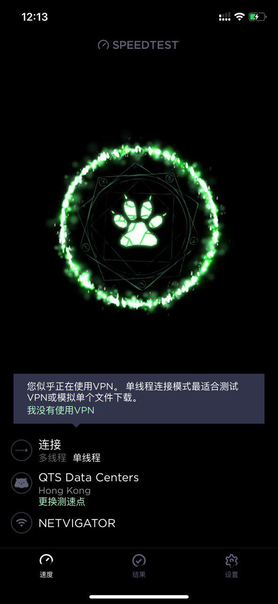

<?xml version="1.0" encoding="UTF-8"?>
<rss version="2.0"
xmlns:content="http://purl.org/rss/1.0/modules/content/"
xmlns:dc="http://purl.org/dc/elements/1.1/"
xmlns:slash="http://purl.org/rss/1.0/modules/slash/"
xmlns:atom="http://www.w3.org/2005/Atom"
xmlns:wfw="http://wellformedweb.org/CommentAPI/">
<channel>
<title>毒奶博主丨欢迎使用代理访问本站。 - Android</title>
<link>https://limbopro.xyz/tag/Android/</link>
<atom:link href="https://limbopro.xyz/feed/tag/Android/" rel="self" type="application/rss+xml" />
<language>zh-CN</language>
<description></description>
<lastBuildDate>Sun, 04 Aug 2019 12:14:00 +0800</lastBuildDate>
<pubDate>Sun, 04 Aug 2019 12:14:00 +0800</pubDate>
<item>
<title>Speedtest丨服务器测速神器</title>
<link>https://limbopro.xyz/archives/speedtest.html</link>
<guid>https://limbopro.xyz/archives/speedtest.html</guid>
<pubDate>Sun, 04 Aug 2019 12:14:00 +0800</pubDate>
<dc:creator>毒奶</dc:creator>
<description><![CDATA[主理人说Speedtest的经典复活节彩蛋主题，意外之喜。Speedtest 介绍1.强大而知名的全球宽带网络速度测试网站，官网地址：https://www.speedtest.net/；2.分...]]></description>
<content:encoded xml:lang="zh-CN"><![CDATA[
<p></p><h2>主理人说</h2><p>Speedtest的经典复活节彩蛋主题，意外之喜。</p><h2>Speedtest 介绍</h2><p>1.强大而知名的全球宽带网络速度测试网站，官网地址：<a href="https://www.speedtest.net/">https://www.speedtest.net/</a>；<br>2.分别支持<a href="https://www.speedtest.net/">网页版测速</a>，APP版测速（<a href="https://www.speedtest.net/apps">Android</a>/<a href="https://www.speedtest.net/apps">iOS</a>）；以及桌面软件（<a href="https://www.speedtest.net/apps/mac">Mac</a>/<a href="https://www.speedtest.net/apps/windows">Win</a>）；以及谷歌<a href="https://chrome.google.com/webstore/detail/speedtest-by-ookla/pgjjikdiikihdfpoppgaidccahalehjh">浏览器扩展</a>插件；<br>3.Speedtest 安卓端离线下载（v4.4.9）；<br>4.安卓版可在 <a href="https://play.google.com/store/apps/details?id=org.zwanoo.android.speedtest&hl=en">Google play</a> 下载最新版本；如果没有安卓<code>GMS</code>，也可在 <a href="https://apkpure.com/speedtest-by-ookla/org.zwanoo.android.speedtest">Apkture.com</a> 下载（需要<a href="../../../category/ssr/index.html">科学上网</a>）</p></br></br></br></img><p class="more"><a href="../../../archives/speedtest.html" title="Speedtest丨服务器测速神器">[...]</a></p>
]]></content:encoded>
<slash:comments>0</slash:comments>
<comments>https://limbopro.xyz/archives/speedtest.html#comments</comments>
<wfw:commentRss>https://limbopro.xyz/feed/archives/speedtest.html</wfw:commentRss>
</item>
<item>
<title>JuiceSSH - SSH 管理工具</title>
<link>https://limbopro.xyz/archives/200.html</link>
<guid>https://limbopro.xyz/archives/200.html</guid>
<pubDate>Thu, 16 May 2019 22:21:00 +0800</pubDate>
<dc:creator>毒奶</dc:creator>
<description><![CDATA[这可能是我用过的最好用的SSH安卓客户端。下载地址：Google playApkture本地下载 2.1.4版或应用商店搜索：JuiceSSH；相关推荐与SSH 客户端相关推荐：https://...]]></description>
<content:encoded xml:lang="zh-CN"><![CDATA[
<blockquote><p>这可能是我用过的最好用的SSH安卓客户端。</p></blockquote><p></p><h3>下载地址：</h3><p><a href="https://play.google.com/store/apps/details?id=com.sonelli.juicessh">Google play</a><br><a href="https://apkpure.com/cn/juicessh-ssh-client/com.sonelli.juicessh">Apkture</a><br><a href="https://limbopro.xyz/usr/uploads/2019/05/1335633537.apk">本地下载 2.1.4版</a></p><p>或<code>应用商店</code>搜索：JuiceSSH；</p><h2>相关推荐</h2><p>与SSH 客户端相关推荐：<a href="../../../tag/SSH/index.html">https://limbopro.xyz/tag/SSH/</a> ；</p>
]]></content:encoded>
<slash:comments>0</slash:comments>
<comments>https://limbopro.xyz/archives/200.html#comments</comments>
<wfw:commentRss>https://limbopro.xyz/feed/archives/200.html</wfw:commentRss>
</item>
</channel>
</rss>